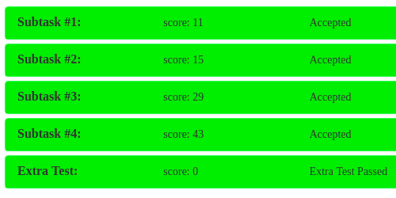

在达芬奇时代，有一个流行的儿童游戏称为连珠线。当然，这个游戏是关于珠子和线的。线是红色或蓝色的，珠子被编号为 $1$ 到 $n$。这个游戏从一个珠子开始，每次会用如下方式添加一个新的珠子：
Append(w, v)：一个新的珠子 $w$ 和一个已经添加的珠子 $v$ 用红线连接起来。Insert(w, u, v)：一个新的珠子 $w$ 插入到用红线连起来的两个珠子 $u, v$ 之间。具体过程是删去 $u, v$ 之间红线，分别用蓝线连接 $u, w$ 和 $w, v$。每条线都有一个长度。游戏结束后，你的最终得分为蓝线长度之和。
给你连珠线游戏结束后的游戏局面，只告诉了你珠子和链的连接方式以及每条线的长度，没有告诉你每条线分别是什么颜色。
你需要写一个程序来找出最大可能得分。即，在所有以给出的最终局面结束的连珠线游戏中找出那个得分最大的，然后输出最大可能得分。
第一行包含一个正整数 $n$ ($n \leq 2 \times 10^5$)，表示珠子的数量。珠子从 $1$ 到 $n$ 编号。
接下来 $n - 1$ 行，每行三个正整数 $a_i, b_i, c_i$ ($1 \leq a_i < b_i \leq n; 1 \leq c_i \leq 10000$)，表示 $a_i$ 号珠子和 $b_i$ 号珠子间连了长度为 $c_i$ 的线。
输出一行一个整数，表示最大可能得分。
显然最后是一棵树。我们设所有操作前的第一个节点 (即第一步操作的节点 $v$) 为 $v$，即树根，来发掘这些操作的性质。
注意到我们需要求蓝边长度和的最大值，因此我们只需关注 Insert 操作。注意到每个 Insert 操作是把 (原来存在的) 一条树边分裂成两条蓝边，因此最后的三个节点一定是 "父节点——自身——子节点" 的关系，而不会是 "子节点 1 ——自身——子节点 2" 的关系。
假设你知道树根 $v$ 是哪个节点，不妨假设为 $1$。我们先来求在这个条件下的最大值 (注意到有更好利用的条件了)。
尝试使用树形 DP。令 $f_i$ 表示以 $i$ 为根的子树中，$i$ 不是蓝边组的中点 (即单次生成的两条蓝边的新加的 $w$ 点)，子树中蓝边长度之和的最大值。
$g_i$ 则表示以 $i$ 为根的子树中，$i$ 是蓝边组的中点，子树中蓝边长度之和的最大值。(注：$i$ 所在的这个蓝边组的权值的计算情况看个人习惯，我这里规定这条蓝边组只算 $i$ 和子节点的那条，不算 $i$ 和父节点 $p_i$ 的那条。当然都算进去也是可以的，因为只相差一个 $\operatorname{dist}(i, p_i)$)
再记 $D_i = \operatorname{dist}(i, p_i)$ (其中 $D_1 = - \infty$，原因后面讲)，$h_i = \max \{f_i, g_i + D_i\}$，则 $f_i$ 和 $g_i$ 的转移如下：
$$ f_i = \sum_{c \in child(i)} h_c = \sum_{c \in child(i)} \max \{f_c, g_c + D_c\} $$
$$ g_i = \max_{c \in child(i)} \left( D_c + f_c + \sum_{d \in child(i) \setminus \{c\}} h_d \right) = f_i + \max_{c \in child(i)} \left( D_c + f_c - h_c \right) = f_i + \max_{c \in child(i)} \min \{f_c - g_c, D_c\} $$
此时的答案即为 $f_1$，此部分时间复杂度 $O(n)$。
然而你并不知道哪个点是初始状态下的根节点，因此如果每个点都 DP 一遍，那么复杂度就是 $O(n^2)$，那太费时了。
根据一个经典的套路，叫做根据 DP 值再 DP 一遍，进行换根 DP。
可以发现，若根节点为其它节点，则对于任意一个节点 $v$，我们只需多知道一个 DP 值即可转移：即 (在以 $1$ 为根的树中) $v$ 向外 (向根) 的那棵子树的 DP 值。大多数情况下，这个值是可以转移的 (倒推)。
记 $f'_i$ 表示以 $i$ 为根的向外的子树 (注：这里向外的子树指的是在以 $1$ 为根的树中，以 $i$ 为根的子树对于所有节点的补集) 中，$i$ 不是蓝边组的中点的 DP 值。$g'_i$ 为 $i$ 是蓝边组的中点的 DP 值, $h'_i = \max \{f'_i, g'_i + D_i\}$。显然有 $f'_1 = g'_1 = h'_1 = 0$ (这时你应该可以注意到令 $D_1 = - \infty$ 的必要性了)。
这样一来，任意节点为根的答案都能知道了，以 $v$ 为根的答案即为 $f_v + h'_v = f_v + \max\{f'_v, g'_v + D_v\}$。因此就只剩下转移问题了。
先转移 $f'_i$。我们从某个节点 $i$ 转移到它的子节点 $c$，可知
$$ f'_c = \sum_{d \in child(i) \setminus \{c\}} h_d + h'_i = f_i - h_c + \max \{f'_i, g'_i + D_i\} $$
然后是 $g'_i$。类似地，可以得到
$$ g'_c = f'_c + \max \left\{ \max_{d \in child(i) \setminus \{c\}} \left( D_d + f_d - h_d \right), D_i + f'_i - h'_i \right\} $$
由于要知道 $D_d + f_d - h_d$ 在去掉一个子节点 $c$ 后的最大值，因此我们只需维护原树中所有子节点的最大值和次大值，以及最大值在哪个节点处取到，就可以维护去掉一个节点后的最大值了。
最后只需取 $\max\limits_v \left( f_v + h'_v \right)$ 即可得到答案，总时间复杂度仍为 $O(n)$。
#include <bits/stdc++.h>
#define N 200005
#define M 400005
using namespace std;
struct edge{
int u, v, w;
edge (int u0 = 0, int v0 = 0, int w0 = 0) : u(u0), v(v0), w(w0) {}
} e[M];
int n, E;
int first[N], next[M];
int p[N], dis[N], trans[N];
int f[N], g[N], _g[N], h[N];
int ans = 0;
inline void up(int &x, const int y) {x < y ? x = y : 0;}
inline void addedge(int u, int v, int w){
e[++E] = edge(u, v, w); next[E] = first[u]; first[u] = E;
e[++E] = edge(v, u, w); next[E] = first[v]; first[v] = E;
}
void dfs(int x) {
int i, y, val;
for (i = first[x]; i; i = next[i])
if ((y = e[i].v) != p[x]) {
p[y] = x; dis[y] = e[i].w; dfs(y);
f[x] += h[y];
val = e[i].w + min(f[y] - g[y] - e[i].w, 0);
g[x] < val ? (void)(trans[x] = y, _g[x] = g[x], g[x] = val) : up(_g[x], val);
}
g[x] += f[x]; _g[x] += f[x];
h[x] = max(f[x], g[x] + dis[x]);
}
void dfs_move_root(int x, int F, int G) {
int i, y, nF, nG;
up(ans, f[x] + max(F, G + dis[x]));
for (i = first[x]; i; i = next[i])
if (p[y = e[i].v] == x) {
nF = max(F, G + dis[x]) + f[x] - h[y];
nG = nF + max(dis[x] + min(F - G - dis[x], 0), (y == trans[x] ? _g[x] : g[x]) - f[x]);
dfs_move_root(y, nF, nG);
}
}
int main() {
int i, u, v, w;
scanf("%d", &n); memset(g, 192, sizeof g); memset(_g, 192, sizeof _g);
for (i = 1; i < n; ++i) scanf("%d%d%d", &u, &v, &w), addedge(u, v, w);
dis[1] = 0x80808080; dfs(1); dfs_move_root(1, 0, 0);
printf("%d\n", ans);
return 0;
}
坑1：不要忘记令 $D_1 = - \infty$，原因上文已经说过。当然，所有 $g_i$ 的 DP 值在初始状态下也应该赋为 $- \infty$ (因为可能不存在状态，使得答案偏大)。
自找亮点... (link)
